SQL 50#
Ce notebook retrace mon travail sur la plateforme leetcode qui propose 50 exercices pour s’entrainer en SQL : https://leetcode.com/studyplan/top-sql-50/
📍Les exos Select#
1757. Recyclable and Low Fat Products ✅#
Enoncé
Table: Products
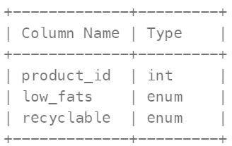
product_id is the primary key (column with unique values) for this table. low_fats is an ENUM (category) of type (‘Y’, ‘N’) where ‘Y’ means this product is low fat and ‘N’ means it is not. recyclable is an ENUM (category) of types (‘Y’, ‘N’) where ‘Y’ means this product is recyclable and ‘N’ means it is not.
Write a solution to find the ids of products that are both low fat and recyclable.
Return the result table in any order.
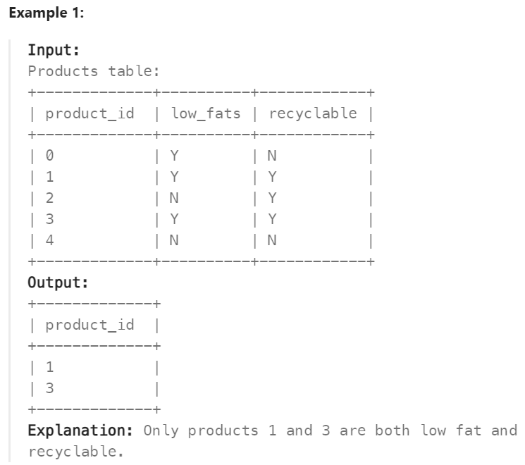
Réponse
SELECT product_id
FROM Products
WHERE low_fats = “Y” AND recyclable = “Y”;
584. Find Customer Referee ✅#
Enoncé
Table: Customer
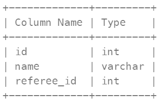
In SQL, id is the primary key column for this table. Each row of this table indicates the id of a customer, their name, and the id of the customer who referred them.
Find the names of the customer that are not referred by the customer with id = 2.
Return the result table in any order.
The result format is in the following example.
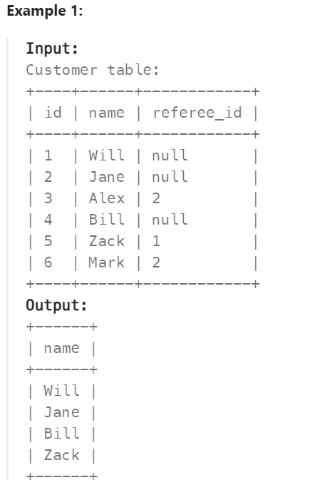
Réponse
SELECT name
FROM Customer
WHERE referee_id != 2 OR referee_id IS NULL;
595. Big Countries ✅#
Enoncé
Table: World
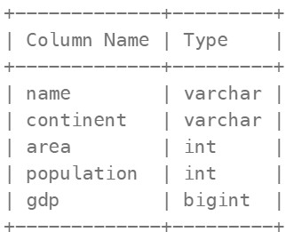
name is the primary key (column with unique values) for this table. Each row of this table gives information about the name of a country, the continent to which it belongs, its area, the population, and its GDP value.
A country is big if:
it has an area of at least three million (i.e., 3000000 km2), or it has a population of at least twenty-five million (i.e., 25000000). Write a solution to find the name, population, and area of the big countries.
Return the result table in any order.
The result format is in the following example.
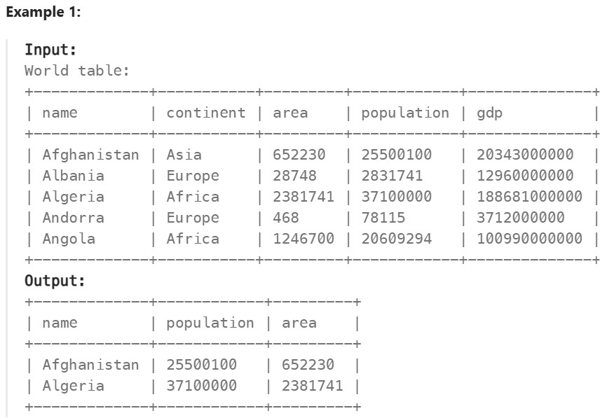
Réponse
SELECT name, population, area
FROM World
WHERE area >= 3000000 OR population >= 25000000;
1148. Article Views I ✅#
Enoncé
Table: Views
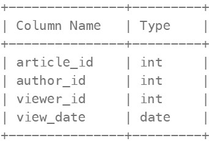
There is no primary key (column with unique values) for this table, the table may have duplicate rows. Each row of this table indicates that some viewer viewed an article (written by some author) on some date. Note that equal author_id and viewer_id indicate the same person.
Write a solution to find all the authors that viewed at least one of their own articles.
Return the result table sorted by id in ascending order. The result format is in the following example
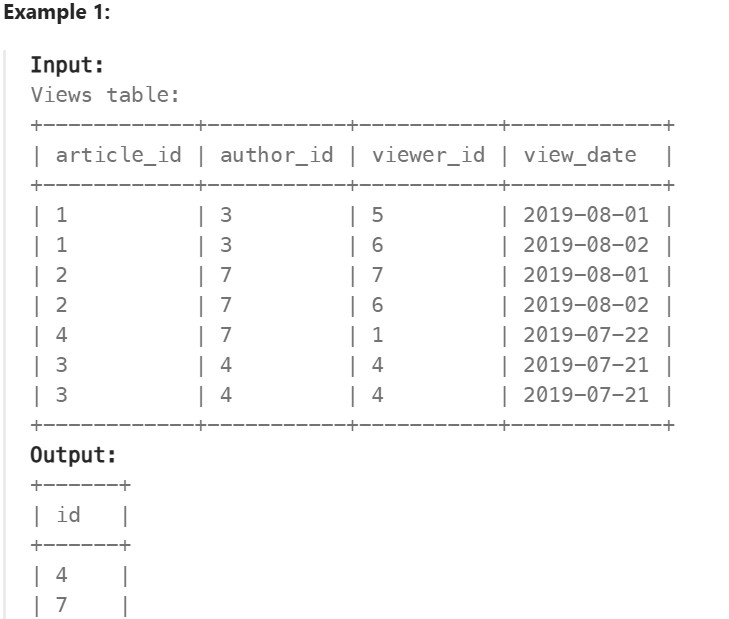
Réponse
SELECT DISTINCT author_id as id
FROM Views
WHERE author_id = viewer_id
ORDER BY id;
1683. Invalid Tweets ✅#
Enoncé
Table: Tweets
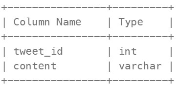
tweet_id is the primary key (column with unique values) for this table. content consists of characters on an American Keyboard, and no other special characters. This table contains all the tweets in a social media app.
Write a solution to find the IDs of the invalid tweets. The tweet is invalid if the number of characters used in the content of the tweet is strictly greater than 15.
Return the result table in any order.
The result format is in the following example
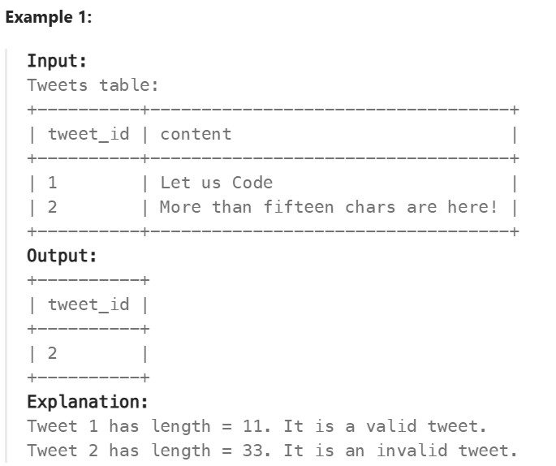
Réponse
SELECT tweet_id
FROM Tweets
WHERE LENGTH(content)>15;
🔗Basic Joins#
1378. Replace Employee ID With The Unique Identifier ✅#
Enoncé
Table: Employees
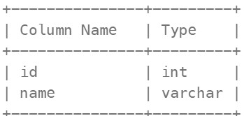
id is the primary key (column with unique values) for this table. Each row of this table contains the id and the name of an employee in a company.
Table: EmployeeUNI
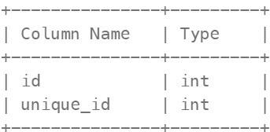
(id, unique_id) is the primary key (combination of columns with unique values) for this table. Each row of this table contains the id and the corresponding unique id of an employee in the company.
Write a solution to show the unique ID of each user, If a user does not have a unique ID replace just show null.
Return the result table in any order.
The result format is in the following example.
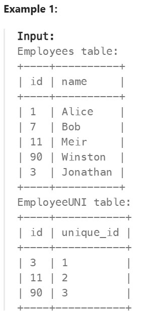 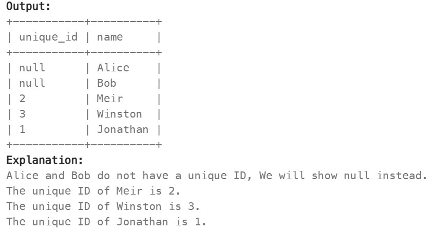
Réponse
SELECT e.name, eu.unique_id
FROM Employees e
LEFT JOIN EmployeeUNI eu
ON e.id = eu.id;
1068. Product Sales Analysis I ✅#
Enoncé
Table: Sales
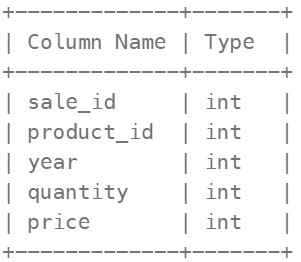
(sale_id, year) is the primary key (combination of columns with unique values) of this table. product_id is a foreign key (reference column) to Product table. Each row of this table shows a sale on the product product_id in a certain year. Note that the price is per unit.
Table: Product
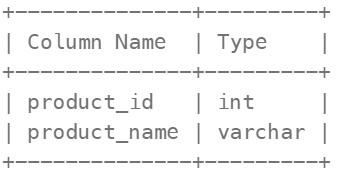
product_id is the primary key (column with unique values) of this table. Each row of this table indicates the product name of each product.
Write a solution to report the product_name, year, and price for each sale_id in the Sales table.
Return the resulting table in any order.
The result format is in the following example.
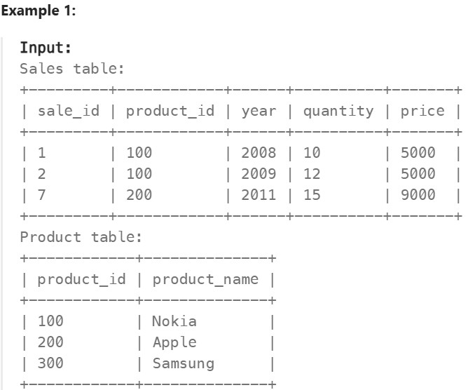 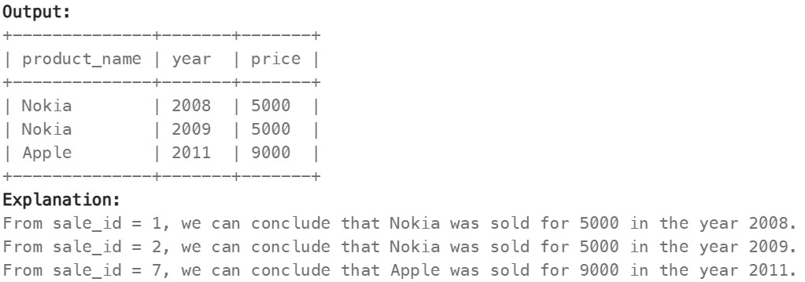
Réponse
SELECT p.product_name, s.year, s.price
FROM Product p
RIGHT JOIN Sales s
ON p.product_id = s.product_id;
1581. Customer Who Visited but Did Not Make Any Transactions ⚠️#
Enoncé
Table: Visits
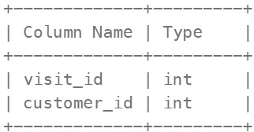
visit_id is the column with unique values for this table. This table contains information about the customers who visited the mall
Table: Transaction
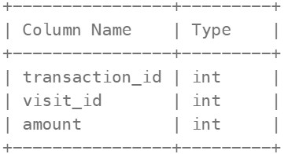
transaction_id is column with unique values for this table. This table contains information about the transactions made during the visit_id.
Write a solution to find the IDs of the users who visited without making any transactions and the number of times they made these types of visits.
Return the result table sorted in any order.
The result format is in the following example.
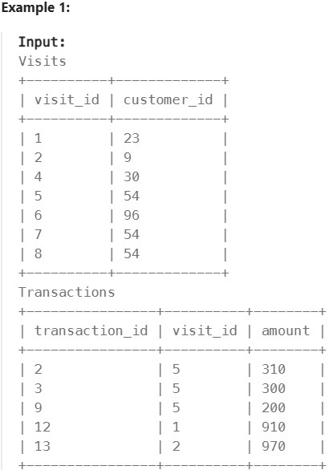 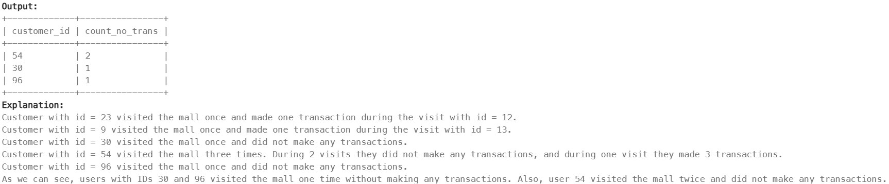
Réponse
SELECT v.customer_id, COUNT(v.visit_id) AS count_no_trans
FROM Visits v
LEFT JOIN Transactions t
ON v.visit_id = t.visit_id
WHERE t.transaction_id IS NULL
GROUP BY v.customer_id;
197. Rising Temperature ⚠️#
Enoncé
Table: Weather
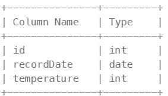
id is the column with unique values for this table. There are no different rows with the same recordDate. This table contains information about the temperature on a certain day.
Write a solution to find all dates’ id with higher temperatures compared to its previous dates (yesterday).
Return the result table in any order.
The result format is in the following example.
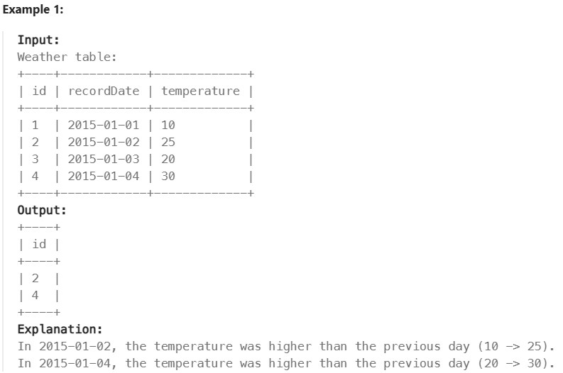
Réponse
SELECT w.id
FROM Weather w
LEFT JOIN Weather w1
ON w.recordDate = DATE_ADD(w1.recordDate, INTERVAL 1 DAY)
WHERE w.temperature>w1.temperature;
OU
SELECT w1.id
FROM Weather w1, Weather w2
WHERE DATEDIFF(w1.recordDate, w2.recordDate) = 1 AND w1.temperature > w2.temperature;
1661. Average Time of Process per Machine ✅#
Enoncé
Table: Activity
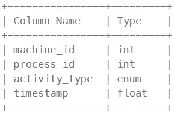
The table shows the user activities for a factory website. (machine_id, process_id, activity_type) is the primary key (combination of columns with unique values) of this table. machine_id is the ID of a machine. process_id is the ID of a process running on the machine with ID machine_id. activity_type is an ENUM (category) of type (‘start’, ‘end’). timestamp is a float representing the current time in seconds. ‘start’ means the machine starts the process at the given timestamp and ‘end’ means the machine ends the process at the given timestamp. The ‘start’ timestamp will always be before the ‘end’ timestamp for every (machine_id, process_id) pair. It is guaranteed that each (machine_id, process_id) pair has a ‘start’ and ‘end’ timestamp.
There is a factory website that has several machines each running the same number of processes. Write a solution to find the average time each machine takes to complete a process.
The time to complete a process is the ‘end’ timestamp minus the ‘start’ timestamp. The average time is calculated by the total time to complete every process on the machine divided by the number of processes that were run.
The resulting table should have the machine_id along with the average time as processing_time, which should be rounded to 3 decimal places.
Return the result table in any order.
The result format is in the following example.
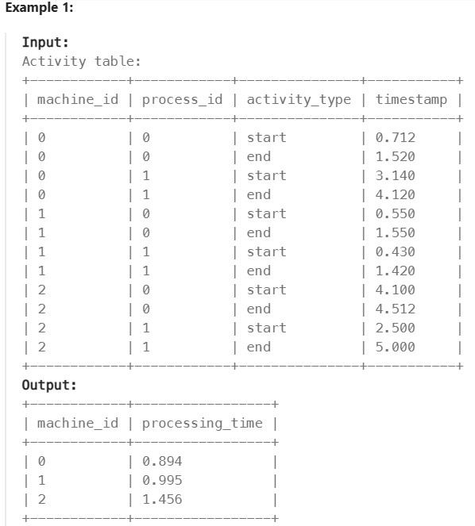
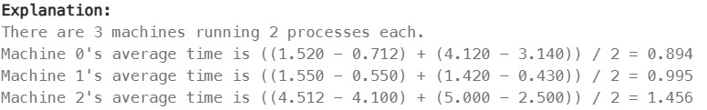
Réponse
SELECT a.machine_id, ROUND(AVG(a2.timestamp-a.timestamp),3) as processing_time
FROM Activity a, Activity a2
WHERE a.machine_id = a2.machine_id AND a.activity_type = 'start' AND a2.activity_type = 'end'
GROUP BY machine_id
OU
# Write your MySQL query statement below
SELECT a.machine_id, ROUND(AVG(b.timestamp-a.timestamp),3) AS processing_time
FROM Activity a
JOIN Activity b
ON a.machine_id = b.machine_id
AND a.process_id = b.process_id
AND a.activity_type = 'start'
AND b.activity_type = 'end'
GROUP BY machine_id;
577. Employee Bonus ✅#
Enoncé
Table: Employee
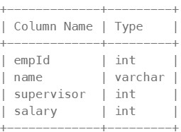
empId is the column with unique values for this table. Each row of this table indicates the name and the ID of an employee in addition to their salary and the id of their manager.
Table: Bonus
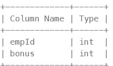
empId is the column of unique values for this table. empId is a foreign key (reference column) to empId from the Employee table. Each row of this table contains the id of an employee and their respective bonus.
Write a solution to report the name and bonus amount of each employee with a bonus less than 1000.
Return the result table in any order.
The result format is in the following example.
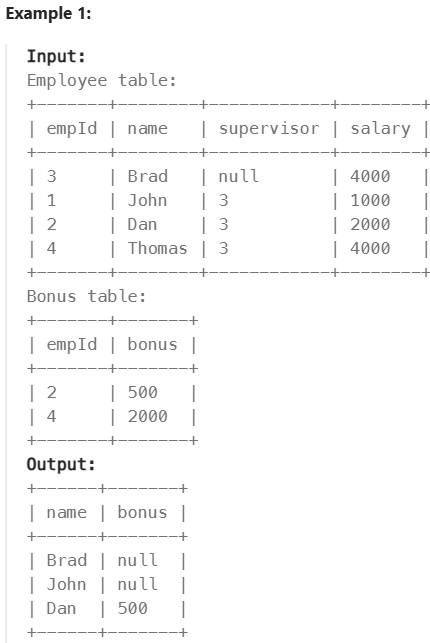
Réponse
SELECT e.name, b.bonus
FROM Employee e
LEFT JOIN Bonus b
ON e.empId = b.empId
WHERE b.bonus < 1000 OR b.bonus IS NULL;
1280. Students and Examinations ✅#
Enoncé
Table: Students
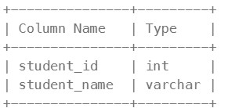
student_id is the primary key (column with unique values) for this table. Each row of this table contains the ID and the name of one student in the school.
Table: Subjects
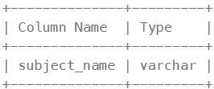
subject_name is the primary key (column with unique values) for this table. Each row of this table contains the name of one subject in the school.
Table: Examinations
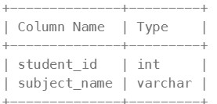
There is no primary key (column with unique values) for this table. It may contain duplicates. Each student from the Students table takes every course from the Subjects table. Each row of this table indicates that a student with ID student_id attended the exam of subject_name.
Write a solution to find the number of times each student attended each exam.
Return the result table ordered by student_id and subject_name.
The result format is in the following example.
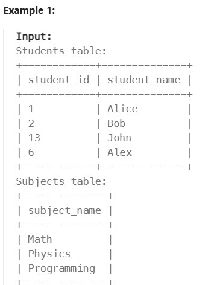
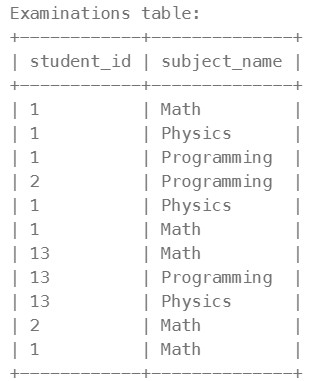
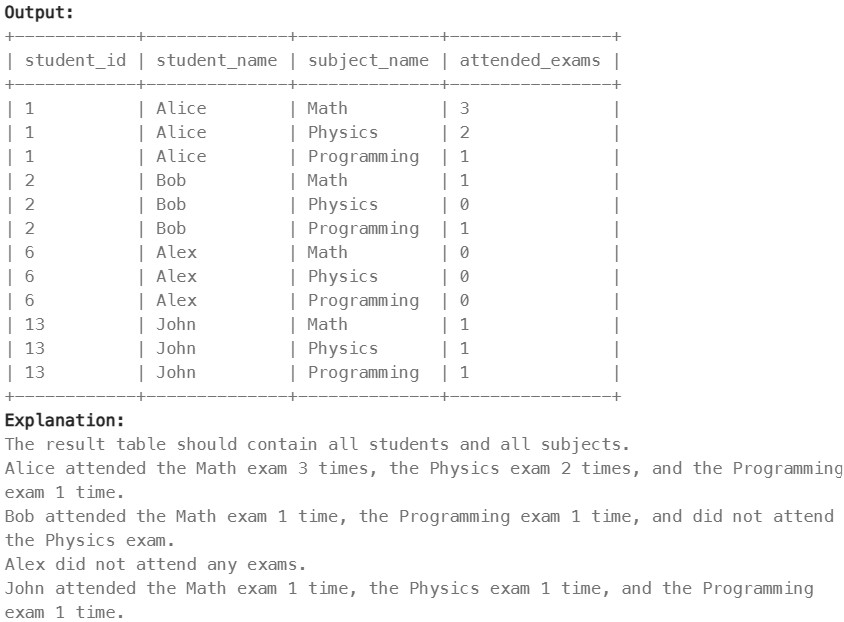
Réponse
SELECT s.student_id,s.student_name,su.subject_name,COUNT(e.student_id) AS attended_exams
FROM Students s
CROSS JOIN Subjects su
LEFT JOIN Examinations e
ON s.student_id = e.student_id AND su.subject_name = e.subject_name
GROUP BY s.student_id, s.student_name, su.subject_name
ORDER BY s.student_id, su.subject_name;
570. Managers with at Least 5 Direct Reports ⚠️#
Enoncé
Table: Employee
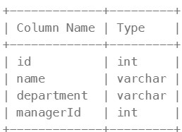
id is the primary key (column with unique values) for this table. Each row of this table indicates the name of an employee, their department, and the id of their manager. If managerId is null, then the employee does not have a manager. No employee will be the manager of themself.
Write a solution to find managers with at least five direct reports.
Return the result table in any order.
The result format is in the following example.
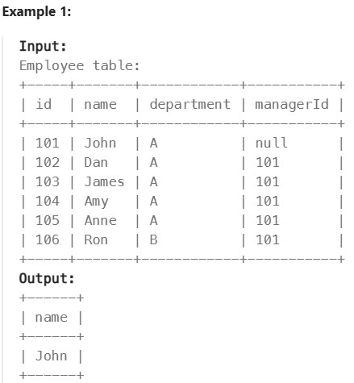
Réponse
SELECT e.name
FROM Employee e
JOIN Employee m
ON e.id = m.managerId
GROUP BY e.id, e.name
HAVING COUNT(e.id) >= 5;
1934. Confirmation Rate#
Enoncé
Table: Signups
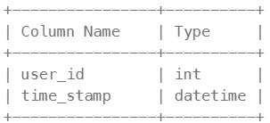
user_id is the column of unique values for this table. Each row contains information about the signup time for the user with ID user_id.
Table: Confirmations
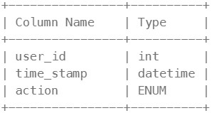
(user_id, time_stamp) is the primary key (combination of columns with unique values) for this table. user_id is a foreign key (reference column) to the Signups table. action is an ENUM (category) of the type (‘confirmed’, ‘timeout’) Each row of this table indicates that the user with ID user_id requested a confirmation message at time_stamp and that confirmation message was either confirmed (‘confirmed’) or expired without confirming (‘timeout’).
The confirmation rate of a user is the number of ‘confirmed’ messages divided by the total number of requested confirmation messages. The confirmation rate of a user that did not request any confirmation messages is 0. Round the confirmation rate to two decimal places.
Write a solution to find the confirmation rate of each user.
Return the result table in any order.
The result format is in the following example.
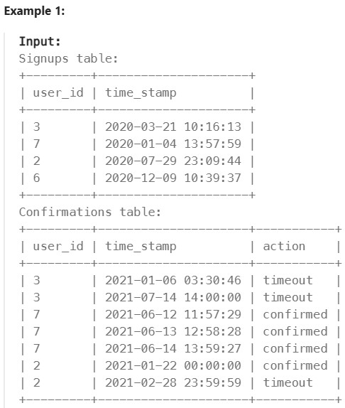
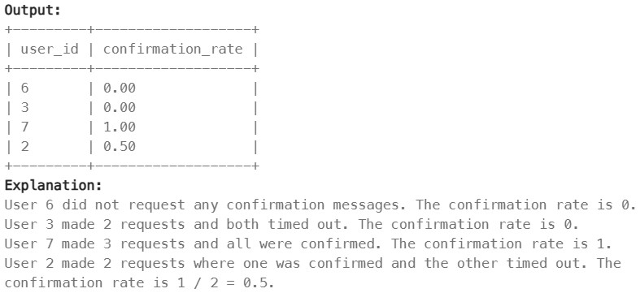
Réponse
SELECT
s.user_id,
COALESCE(ROUND(
COALESCE(SUM(CASE WHEN c.action = 'confirmed' THEN 1 ELSE 0 END), 0)
/ NULLIF(COUNT(c.action), 0),
2
),0) AS confirmation_rate
FROM
Signups s
LEFT JOIN
Confirmations c
ON
s.user_id = c.user_id
GROUP BY
s.user_id;
OR
SELECT s.user_id, round(avg(if(c.action="confirmed",1,0)),2) as confirmation_rate
FROM Signups as s
LEFT JOIN Confirmations as c
ON s.user_id= c.user_id
GROUP BY user_id;
Basic Aggregate Functions#
620. Not Boring Movies#
Enoncé
Table: Cinema
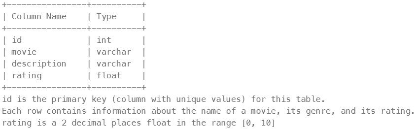
Write a solution to report the movies with an odd-numbered ID and a description that is not “boring”.
Return the result table ordered by rating in descending order.
The result format is in the following example.
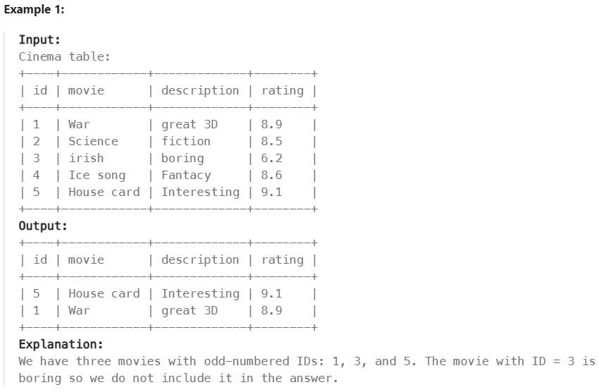
Réponse
SELECT *
FROM Cinema
WHERE description!="boring"
HAVING id%2=1
ORDER BY rating DESC
1251. Average Selling Price#
Enoncé
Table: Prices
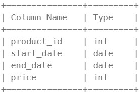
(product_id, start_date, end_date) is the primary key (combination of columns with unique values) for this table. Each row of this table indicates the price of the product_id in the period from start_date to end_date. For each product_id there will be no two overlapping periods. That means there will be no two intersecting periods for the same product_id.
Table: UnitsSold
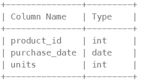
This table may contain duplicate rows. Each row of this table indicates the date, units, and product_id of each product sold.
Write a solution to find the average selling price for each product. average_price should be rounded to 2 decimal places. If a product does not have any sold units, its average selling price is assumed to be 0.
Return the result table in any order.
The result format is in the following example.
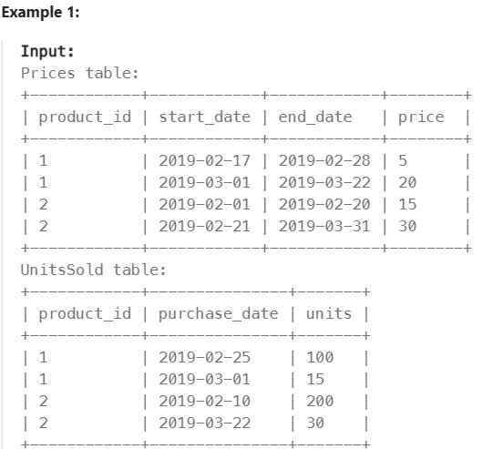
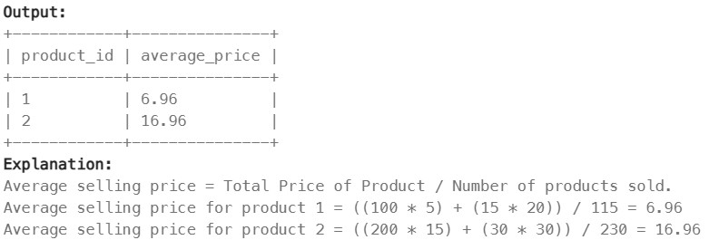
Réponse
SELECT
p.product_id,
ROUND(IF(SUM(s.units) IS NULL, 0, SUM(s.units*p.price)/SUM(s.units)), 2) as average_price
FROM Prices p
LEFT JOIN UnitsSold s
ON p.product_id = s.product_id AND s.purchase_date BETWEEN p.start_date AND p.end_date
GROUP BY p.product_id;
1075. Project Employees I#
Enoncé
Table: Project
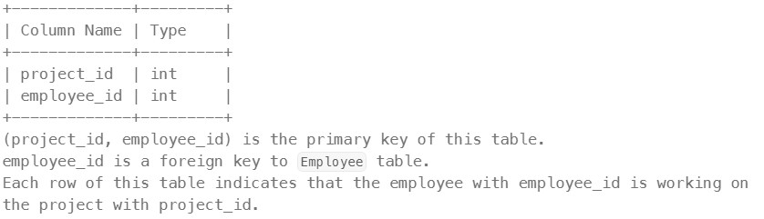
Table: Employee
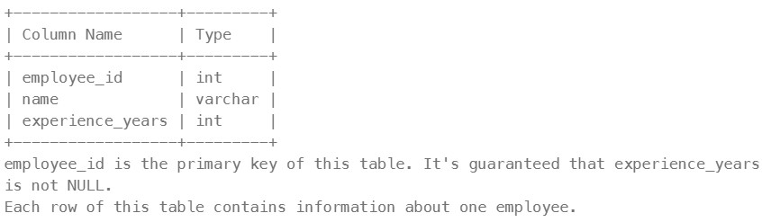
Write an SQL query that reports the average experience years of all the employees for each project, rounded to 2 digits.
Return the result table in any order.
The query result format is in the following example.
Réponse
SELECT p.project_id, ROUND(AVG(e.experience_years), 2) as average_years
FROM Project p
LEFT JOIN Employee e
ON p.employee_id = e.employee_id
GROUP BY p.project_id;
1633. Percentage of Users Attended a Contest#
Enoncé
Table: Users
Table: Register
Write a solution to find the percentage of the users registered in each contest rounded to two decimals.
Return the result table ordered by percentage in descending order. In case of a tie, order it by contest_id in ascending order.
The result format is in the following example.
Réponse
SELECT r.contest_id, ROUND((COUNT(r.contest_id)/(SELECT COUNT(*) FROM Users))* 100, 2) as percentage
FROM Register r
LEFT JOIN Users u
ON r.user_id = u.user_id
GROUP BY r.contest_id
ORDER BY percentage DESC, r.contest_id ASC;
1211. Queries Quality and Percentage#
Enoncé
Table: Queries
We define query quality as:
The average of the ratio between query rating and its position.
We also define poor query percentage as:
The percentage of all queries with rating less than 3.
Write a solution to find each query_name, the quality and poor_query_percentage.
Both quality and poor_query_percentage should be rounded to 2 decimal places.
Return the result table in any order.
The result format is in the following example.
Réponse
SELECT
query_name,
ROUND(AVG(rating/position),2) as quality,
ROUND((SUM(CASE WHEN rating < 3 THEN 1 ELSE 0 END) * 100.0) / COUNT(*), 2)
as poor_query_percentage
FROM Queries
GROUP BY query_name;
1193. Monthly Transactions I#
Enoncé
Table: Queries
Write an SQL query to find for each month and country, the number of transactions and their total amount, the number of approved transactions and their total amount.
Return the result table in any order.
The query result format is in the following example.
Réponse
SELECT
DATE_FORMAT(trans_date, '%Y-%m') as month,
country,
COUNT(id) as trans_count,
SUM(CASE WHEN state="approved" THEN 1 ELSE 0 END) as approved_count,
SUM(amount) as trans_µtotal_amount,
SUM(CASE WHEN state="approved" THEN amount ELSE 0 END) as approved_total_amount
FROM Transactions
GROUP BY month, country;
1174. Immediate Food Delivery II#
Enoncé
Table: Delivery
If the customer’s preferred delivery date is the same as the order date, then the order is called immediate; otherwise, it is called scheduled.
The first order of a customer is the order with the earliest order date that the customer made. It is guaranteed that a customer has precisely one first order.
Write a solution to find the percentage of immediate orders in the first orders of all customers, rounded to 2 decimal places.
The result format is in the following example.
Réponse
SELECT
ROUND(AVG(order_date = customer_pref_delivery_date)*100, 2) AS immediate_percentage
FROM Delivery
WHERE (customer_id, order_date) IN (
SELECT customer_id, min(order_date)
FROM Delivery
GROUP BY customer_id);
550. Game Play Analysis IV#
Enoncé
Table: Activity
Write a solution to report the fraction of players that logged in again on the day after the day they first logged in, rounded to 2 decimal places. In other words, you need to count the number of players that logged in for at least two consecutive days starting from their first login date, then divide that number by the total number of players.
The result format is in the following example.
Réponse
# First, let's store the first login date of each player.
WITH temp AS (
SELECT player_id, MIN(event_date) AS first_login_date
FROM Activity
GROUP BY player_id
)
# Calculate the fraction of players who logged in exactly one day after their first login.
SELECT
ROUND(
SUM(DATEDIFF(a.event_date, t.first_login_date) = 1) / COUNT(DISTINCT a.player_id), 2
) AS fraction
FROM Activity a
JOIN temp t ON a.player_id = t.player_id;
Sorting and Grouping#
2356. Number of Unique Subjects Taught by Each Teacher ✅#
Enoncé
Table: Teacher
Write a solution to calculate the number of unique subjects each teacher teaches in the university.
Return the result table in any order.
The result format is shown in the following example.
Réponse
SELECT teacher_id, COUNT(DISTINCT subject_id) as cnt
FROM Teacher
GROUP BY teacher_id;
1141. User Activity for the Past 30 Days I ✅#
Enoncé
Table: Teacher
Write a solution to find the daily active user count for a period of 30 days ending 2019-07-27 inclusively. A user was active on someday if they made at least one activity on that day.
Return the result table in any order.
The result format is in the following example.
Réponse
SELECT activity_date as day, COUNT(DISTINCT user_id) as active_users
FROM Activity
WHERE
(
activity_type = "scroll_down"
OR activity_type = "send_message"
OR activity_type ="open_session"
OR activity_type ="end_session"
)
AND
DATEDIFF("2019-07-27", activity_date)<DATEDIFF("2019-07-27", "2019-06-28")+1
AND activity_date <= "2019-07-27"
GROUP BY day;
1070. Product Sales Analysis III#
Enoncé
Table: Sales
Table: Product
Write a solution to select the product id, year, quantity, and price for the first year of every product sold.
Return the resulting table in any order.
The result format is in the following example.
Réponse
Avec sous-requête :
select product_id, year as first_year, quantity, price
from sales where (product_id, year) in (
select product_id, min(year)
from sales
group by product_id
)
Avec CTE :
WITH FirstYear AS (
SELECT product_id, MIN(year) AS first_year
FROM Sales
GROUP BY product_id
)
SELECT s.product_id, s.year as first_year, s.quantity, s.price
FROM Sales s
JOIN FirstYear n
ON s.product_id = n.product_id AND s.year = n.first_year
ORDER BY first_year
596. Classes More Than 5 Students ✅#
Enoncé
Table: Courses
Write a solution to find all the classes that have at least five students.
Return the result table in any order.
The result format is in the following example.
Réponse
SELECT class
FROM Courses
GROUP BY class
HAVING COUNT(class)>=5;
1729. Find Followers Count ✅#
Enoncé
Table: Followers
Write a solution to find all the classes that have at least five students.
Return the result table in any order.
The result format is in the following example.
Réponse
SELECT user_id, COUNT(follower_id) AS followers_count
FROM Followers
GROUP BY user_id
ORDER BY user_id;
619. Biggest Single Number ✅#
Enoncé
Table: MyNumbers
A single number is a number that appeared only once in the MyNumbers table.
Find the largest single number. If there is no single number, report null.
The result format is in the following example.
Réponse
SELECT MAX(num) AS num
FROM (
SELECT num
FROM MyNumbers
GROUP BY num
HAVING COUNT(num) = 1
) AS unique_numbers;
OR
SELECT num
FROM (
SELECT num
FROM MyNumbers
GROUP BY num
HAVING COUNT(num) = 1
UNION ALL
SELECT NULL) AS combined_results
ORDER BY num DESC
LIMIT 1;
1045. Customers Who Bought All Products#
Enoncé
Write a solution to report the customer ids from the Customer table that bought all the products in the Product table.
Return the result table in any order.
The result format is in the following example.
Réponse
SELECT c.customer_id
FROM Customer c
JOIN Product p
ON c.product_key = p.product_key
GROUP BY c.customer_id
HAVING COUNT(DISTINCT c.product_key) = (SELECT COUNT(*) FROM Product);
Advanced String Functions / Regex / Clause#
1667. Fix Names in Table ✅#
Enoncé
Table: Users
+----------------+---------+
| Column Name | Type |
+----------------+---------+
| user_id | int |
| name | varchar |
+----------------+---------+
user_id is the primary key (column with unique values) for this table. This table contains the ID and the name of the user. The name consists of only lowercase and uppercase characters.
Write a solution to fix the names so that only the first character is uppercase and the rest are lowercase.
Return the result table ordered by user_id.
The result format is in the following example.
Réponse
SELECT user_id, CONCAT(UPPER(LEFT(name,1)),LOWER(RIGHT(name,LENGTH(name)-1))) as name
FROM Users
ORDER BY user_id;
OU
SELECT user_id,CONCAT(UPPER(SUBSTR(name,1,1)),LOWER(SUBSTR(name,2,length(name)))) AS name
FROM Users ORDER BY user_id;
1527. Patients With a Condition ✅#
Enoncé
Table: Patients
+--------------+---------+
| Column Name | Type |
+--------------+---------+
| patient_id | int |
| patient_name | varchar |
| conditions | varchar |
+--------------+---------+
patient_id is the primary key (column with unique values) for this table. ‘conditions’ contains 0 or more code separated by spaces. This table contains information of the patients in the hospital.
Write a solution to find the patient_id, patient_name, and conditions of the patients who have Type I Diabetes. Type I Diabetes always starts with DIAB1 prefix.
Return the result table in any order.
The result format is in the following example.
Example 1:
Input: Patients table:
+------------+--------------+--------------+
| patient_id | patient_name | conditions |
+------------+--------------+--------------+
| 1 | Daniel | YFEV COUGH |
| 2 | Alice | |
| 3 | Bob | DIAB100 MYOP |
| 4 | George | ACNE DIAB100 |
| 5 | Alain | DIAB201 |
+------------+--------------+--------------+
Output:
+------------+--------------+--------------+
| patient_id | patient_name | conditions |
+------------+--------------+--------------+
| 3 | Bob | DIAB100 MYOP |
| 4 | George | ACNE DIAB100 |
+------------+--------------+--------------+
Explanation: Bob and George both have a condition that starts with DIAB1.
Réponse
SELECT *
FROM Patients
WHERE conditions LIKE "% DIAB1%" OR conditions LIKE "DIAB1%";
196. Delete Duplicate Emails#
Enoncé
Table: Person
+-------------+---------+
| Column Name | Type |
+-------------+---------+
| id | int |
| email | varchar |
+-------------+---------+
id is the primary key (column with unique values) for this table. Each row of this table contains an email. The emails will not contain uppercase letters.
Write a solution to delete all duplicate emails, keeping only one unique email with the smallest id.
For SQL users, please note that you are supposed to write a DELETE statement and not a SELECT one.
For Pandas users, please note that you are supposed to modify Person in place.
After running your script, the answer shown is the Person table. The driver will first compile and run your piece of code and then show the Person table. The final order of the Person table does not matter.
The result format is in the following example.
Example 1:
Input: Person table:
+----+------------------+
| id | email |
+----+------------------+
| 1 | john@example.com |
| 2 | bob@example.com |
| 3 | john@example.com |
+----+------------------+
Output:
+----+------------------+
| id | email |
+----+------------------+
| 1 | john@example.com |
| 2 | bob@example.com |
+----+------------------+
Explanation: john@example.com is repeated two times. We keep the row with the smallest Id = 1.
Réponse
DELETE p FROM Person p, Person p2
WHERE p.email=p2.email and p.id>p2.id;
176. Second Highest Salary#
Enoncé
Table: Employee
+-------------+------+
| Column Name | Type |
+-------------+------+
| id | int |
| salary | int |
+-------------+------+
id is the primary key (column with unique values) for this table. Each row of this table contains information about the salary of an employee.
Write a solution to find the second highest distinct salary from the Employee table. If there is no second highest salary, return null (return None in Pandas).
The result format is in the following example.
Example 1:
Input: Employee table:
+----+--------+
| id | salary |
+----+--------+
| 1 | 100 |
| 2 | 200 |
| 3 | 300 |
+----+--------+
Output:
+---------------------+
| SecondHighestSalary |
+---------------------+
| 200 |
+---------------------+
Example 2:
Input: Employee table:
+----+--------+
| id | salary |
+----+--------+
| 1 | 100 |
+----+--------+
Output:
+---------------------+
| SecondHighestSalary |
+---------------------+
| null |
+---------------------+
Réponse
SELECT
(SELECT DISTINCT salary
FROM Employee
ORDER BY salary DESC
LIMIT 1 OFFSET 1) AS SecondHighestSalary;
OU
WITH max_salary AS (
SELECT MAX(salary) AS maximum
FROM Employee
)
SELECT
(SELECT MAX(salary)
FROM Employee
WHERE salary < (SELECT maximum FROM max_salary)
) AS SecondHighestSalary;
1484. Group Sold Products By The Date#
Enoncé
Table Activities:
+-------------+---------+
| Column Name | Type |
+-------------+---------+
| sell_date | date |
| product | varchar |
+-------------+---------+
There is no primary key (column with unique values) for this table. It may contain duplicates. Each row of this table contains the product name and the date it was sold in a market.
Write a solution to find for each date the number of different products sold and their names.
The sold products names for each date should be sorted lexicographically.
Return the result table ordered by sell_date.
The result format is in the following example.
Example 1:
Input: Activities table:
+------------+------------+
| sell_date | product |
+------------+------------+
| 2020-05-30 | Headphone |
| 2020-06-01 | Pencil |
| 2020-06-02 | Mask |
| 2020-05-30 | Basketball |
| 2020-06-01 | Bible |
| 2020-06-02 | Mask |
| 2020-05-30 | T-Shirt |
+------------+------------+
Output:
+------------+----------+------------------------------+
| sell_date | num_sold | products |
+------------+----------+------------------------------+
| 2020-05-30 | 3 | Basketball,Headphone,T-shirt |
| 2020-06-01 | 2 | Bible,Pencil |
| 2020-06-02 | 1 | Mask |
+------------+----------+------------------------------+
Explanation: For 2020-05-30, Sold items were (Headphone, Basketball, T-shirt), we sort them lexicographically and separate them by a comma. For 2020-06-01, Sold items were (Pencil, Bible), we sort them lexicographically and separate them by a comma. For 2020-06-02, the Sold item is (Mask), we just return it.
Réponse
SELECT sell_date, COUNT(DISTINCT product) as num_sold, GROUP_CONCAT(DISTINCT product ORDER BY product ASC SEPARATOR ',') AS products
FROM Activities
GROUP BY sell_date;
1327. List the Products Ordered in a Period#
Enoncé
Table: Products
+------------------+---------+
| Column Name | Type |
+------------------+---------+
| product_id | int |
| product_name | varchar |
| product_category | varchar |
+------------------+---------+
product_id is the primary key (column with unique values) for this table. This table contains data about the company’s products.
Table: Orders
+---------------+---------+
| Column Name | Type |
+---------------+---------+
| product_id | int |
| order_date | date |
| unit | int |
+---------------+---------+
This table may have duplicate rows. product_id is a foreign key (reference column) to the Products table. unit is the number of products ordered in order_date.
Write a solution to get the names of products that have at least 100 units ordered in February 2020 and their amount.
Return the result table in any order.
The result format is in the following example.
Example 1:
Input: Products table:
+-------------+-----------------------+------------------+
| product_id | product_name | product_category |
+-------------+-----------------------+------------------+
| 1 | Leetcode Solutions | Book |
| 2 | Jewels of Stringology | Book |
| 3 | HP | Laptop |
| 4 | Lenovo | Laptop |
| 5 | Leetcode Kit | T-shirt |
+-------------+-----------------------+------------------+
Orders table:
+--------------+--------------+----------+
| product_id | order_date | unit |
+--------------+--------------+----------+
| 1 | 2020-02-05 | 60 |
| 1 | 2020-02-10 | 70 |
| 2 | 2020-01-18 | 30 |
| 2 | 2020-02-11 | 80 |
| 3 | 2020-02-17 | 2 |
| 3 | 2020-02-24 | 3 |
| 4 | 2020-03-01 | 20 |
| 4 | 2020-03-04 | 30 |
| 4 | 2020-03-04 | 60 |
| 5 | 2020-02-25 | 50 |
| 5 | 2020-02-27 | 50 |
| 5 | 2020-03-01 | 50 |
+--------------+--------------+----------+
Output:
+--------------------+---------+
| product_name | unit |
+--------------------+---------+
| Leetcode Solutions | 130 |
| Leetcode Kit | 100 |
+--------------------+---------+
Explanation: Products with product_id = 1 is ordered in February a total of (60 + 70) = 130. Products with product_id = 2 is ordered in February a total of 80. Products with product_id = 3 is ordered in February a total of (2 + 3) = 5. Products with product_id = 4 was not ordered in February 2020. Products with product_id = 5 is ordered in February a total of (50 + 50) = 100.
Réponse
SELECT p.product_name, SUM(o.unit) AS unit
FROM Products p
LEFT JOIN Orders o
ON p.product_id = o.product_id
WHERE (MONTH(o.order_date) = 2 AND YEAR(o.order_date) = 2020)
GROUP BY p.product_id
HAVING SUM(o.unit)>=100;
Note : On aurait pu également écrire WHERE DATE_FORMAT(o.order_date, '%Y-%m') = '2020-02'
1517. Find Users With Valid E-Mails#
Enoncé
Table: Users
+---------------+---------+
| Column Name | Type |
+---------------+---------+
| user_id | int |
| name | varchar |
| mail | varchar |
+---------------+---------+
user_id is the primary key (column with unique values) for this table. This table contains information of the users signed up in a website. Some e-mails are invalid.
Write a solution to find the users who have valid emails.
A valid e-mail has a prefix name and a domain where:
The prefix name is a string that may contain letters (upper or lower case), digits, underscore ‘_’, period ‘.’, and/or dash ‘-’. The prefix name must start with a letter. The domain is ‘@leetcode.com’. Return the result table in any order.
The result format is in the following example.
Example 1:
Input: Users table:
+---------+-----------+-------------------------+
| user_id | name | mail |
+---------+-----------+-------------------------+
| 1 | Winston | winston@leetcode.com |
| 2 | Jonathan | jonathanisgreat |
| 3 | Annabelle | bella-@leetcode.com |
| 4 | Sally | sally.come@leetcode.com |
| 5 | Marwan | quarz#2020@leetcode.com |
| 6 | David | david69@gmail.com |
| 7 | Shapiro | .shapo@leetcode.com |
+---------+-----------+-------------------------+
Output:
+---------+-----------+-------------------------+
| user_id | name | mail |
+---------+-----------+-------------------------+
| 1 | Winston | winston@leetcode.com |
| 3 | Annabelle | bella-@leetcode.com |
| 4 | Sally | sally.come@leetcode.com |
+---------+-----------+-------------------------+
Explanation: The mail of user 2 does not have a domain. The mail of user 5 has the # sign which is not allowed. The mail of user 6 does not have the leetcode domain. The mail of user 7 starts with a period.
Réponse
SELECT *
FROM Users
WHERE mail REGEXP '^[a-zA-Z][a-zA-Z0-9_.-]*@leetcode[.]com$';
Advanced Select and Joins#
1731. The Number of Employees Which Report to Each Employee ✅#
Enoncé
For this problem, we will consider a manager an employee who has at least 1 other employee reporting to them.
Write a solution to report the ids and the names of all managers, the number of employees who report directly to them, and the average age of the reports rounded to the nearest integer.
Return the result table ordered by employee_id.
The result format is in the following example.
Réponse
Ma solution :
SELECT e.employee_id, e.name,
(SELECT COUNT(e2.reports_to) FROM Employees e2 WHERE e2.reports_to = e.employee_id) AS reports_count,
ROUND((SELECT AVG(e3.age) FROM Employees e3 WHERE e3.reports_to = e.employee_id) , 0) AS average_age
FROM Employees e
JOIN Employees e1
ON e.employee_id = e1.employee_id
GROUP BY e.employee_id
HAVING reports_count > 0
ORDER BY e.employee_id;
Solution optimisée :
SELECT
e1.employee_id,
e1.name,
count(e2.reports_to) as reports_count,
round(avg(e2.age)) as average_age
FROM employees e1
JOIN employees e2 ON e1.employee_id=e2.reports_to
WHERE e2.reports_to is not null
GROUP BY e1.employee_id
ORDER BY e1.employee_id;
1789. Primary Department for Each Employee#
Enoncé
Employees can belong to multiple departments. When the employee joins other departments, they need to decide which department is their primary department. Note that when an employee belongs to only one department, their primary column is ‘N’.
Write a solution to report all the employees with their primary department. For employees who belong to one department, report their only department.
Return the result table in any order.
The result format is in the following example.
Réponse
Ma solution :
SELECT employee_id, department_id
FROM Employee
WHERE primary_flag = "Y" OR employee_id IN (SELECT employee_id
FROM Employee
GROUP BY employee_id
HAVING COUNT(employee_id)=1)
610. Triangle Judgement#
Enoncé
Report for every three line segments whether they can form a triangle.
Return the result table in any order.
The result format is in the following example.
Réponse
SELECT x, y, z, IF(x+y > z AND y+z>x AND x+z>y, "Yes", "No") as triangle
FROM Triangle
180. Consecutive Numbers#
Enoncé
Table: Logs
+-------------+---------+
| Column Name | Type |
+-------------+---------+
| id | int |
| num | varchar |
+-------------+---------+
In SQL, id is the primary key for this table. id is an autoincrement column starting from 1.
Find all numbers that appear at least three times consecutively.
Return the result table in any order.
The result format is in the following example.
Example 1:
Input: Logs table:
+----+-----+
| id | num |
+----+-----+
| 1 | 1 |
| 2 | 1 |
| 3 | 1 |
| 4 | 2 |
| 5 | 1 |
| 6 | 2 |
| 7 | 2 |
+----+-----+
Output:
+-----------------+
| ConsecutiveNums |
+-----------------+
| 1 |
+-----------------+
Explanation: 1 is the only number that appears consecutively for at least three times.
Réponse
SELECT DISTINCT l1.num AS ConsecutiveNums
FROM Logs l1
JOIN Logs l2 ON l1.id = l2.id + 1 AND l1.num = l2.num
JOIN Logs l3 ON l1.id = l3.id + 2 AND l1.num = l3.num
1164. Product Price at a Given Date#
1204. Last Person to Fit in the Bus#
1907. Count Salary Categories#
Subqueries#
1978. Employees Whose Manager Left the Company#
Enoncé
Table: Employees
+-------------+----------+
| Column Name | Type |
+-------------+----------+
| employee_id | int |
| name | varchar |
| manager_id | int |
| salary | int |
+-------------+----------+
In SQL, employee_id is the primary key for this table. This table contains information about the employees, their salary, and the ID of their manager. Some employees do not have a manager (manager_id is null).
Find the IDs of the employees whose salary is strictly less than $30000 and whose manager left the company. When a manager leaves the company, their information is deleted from the Employees table, but the reports still have their manager_id set to the manager that left.
Return the result table ordered by employee_id.
The result format is in the following example.
Example 1:
Input:
Employees table:
+-------------+-----------+------------+--------+
| employee_id | name | manager_id | salary |
+-------------+-----------+------------+--------+
| 3 | Mila | 9 | 60301 |
| 12 | Antonella | null | 31000 |
| 13 | Emery | null | 67084 |
| 1 | Kalel | 11 | 21241 |
| 9 | Mikaela | null | 50937 |
| 11 | Joziah | 6 | 28485 |
+-------------+-----------+------------+--------+
Output:
+-------------+
| employee_id |
+-------------+
| 11 |
+-------------+
Explanation: The employees with a salary less than $30000 are 1 (Kalel) and 11 (Joziah). Kalel’s manager is employee 11, who is still in the company (Joziah). Joziah’s manager is employee 6, who left the company because there is no row for employee 6 as it was deleted.
Réponse
SELECT employee_id
FROM Employees
WHERE salary < 30000 and manager_id NOT IN (SELECT employee_id FROM Employees)
ORDER BY employee_id;